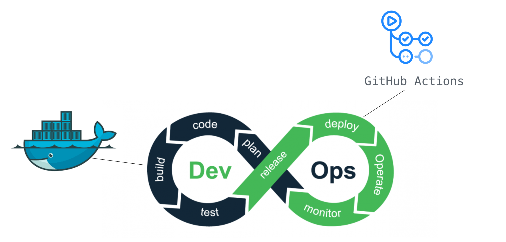

🐳 A la découverte de Docker !
- Docker: A quoi ça sert ?
- REX #1 : Une application Node.js
- REX #2 : Une application PHP avec sa petite base MySQL
- Etapes pour dockeriser son projet RNCP
- Conseils et ressources utiles
- J'ai tendance à parler vite: arrêtez moi quand vous voulez
- Vous pouvez utiliser le chat en cas de question ou parler directement au micro selon votre aisance.
Comment démarrez-vous vos projets dans vos alternances ?
Utilisez-vous Docker au quotidien ?
J'ai un site Wordpress avec une base de données.
J'accueille un·e camarade dessus.
Comment cette personne peut récupérer le projet sur sa machine et le faire démarrer ?
# Installer un serveur de requêtes - Apache / Nginx
apt-get install apache2
# Installer un serveur applicatif (PHP/Node...)
apt-get install php8.1-fpm
# Installer composer
php -r "copy('https://getcomposer.org/installer', 'composer-setup.php');"
php -r "if (hash_file('sha384', 'composer-setup.php') === 'dac665fdc30fdd8ec78b38b9800061b4150413ff2e3b6f88543c636f7cd84f6db9189d43a81e5503cda447da73c7e5b6') { echo 'Installer verified'; } else { echo 'Installer corrupt'; unlink('composer-setup.php'); } echo PHP_EOL;"
php composer-setup.php
php -r "unlink('composer-setup.php');"
composer install wordpress
| 😍 | 🤬 |
| Formateur dans l'apprentissage (on visualise tout le nécessaire au fonctionnement du site) | Liste longue d'étapes à répéter à chaque nouvel environnement crée |
| Différences Mac/Windows/Linux |
# installation de docker sur Mac - https://docs.docker.com/desktop/install/mac-install/
sudo hdiutil attach Docker.dmg
sudo /Volumes/Docker/Docker.app/Contents/MacOS/install
sudo hdiutil detach /Volumes/Docker
# On se place sur son projet dockerisé
cd MonProjet/
# Tada 🎉
docker-compose up
| 😍 | 🤬 |
| Toute l'application est packagée avec ses dépendances | Docker sur Mac pouvait être pénible ? |
Quelque soit l'OS hôte, on démarre le projet avec la même commande docker ...ou docker compose ... |
 Docker exploite le système d'exploitation de la machine hôte alors que la VM embarque son propre OS (et donc, est plus volumineuse)
Docker exploite le système d'exploitation de la machine hôte alors que la VM embarque son propre OS (et donc, est plus volumineuse)
Devops
Un peu de terminologie
- Image: Paquet qui contient tout ce qui est nécessaire à une application (code, dépendances...)
- Container: Une image en cours d'exécution
- Dockerfile: La "recette de cuisine" pour fabriquer une image
💡 La série "Understanding Docker in 2 minutes" peut vous intéresser ! (Sketchnode, article, vidéo)
Cas 1: Exemple d'une application Node.js
Dockerfile
🛟 Retrouver ce que chaque instruction signifie
FROM node:lts-buster-slim
ADD . /workdir
WORKDIR /workdir
EXPOSE 8888
RUN yarn install
CMD [ "yarn", "start" ]
Ressource utile
🛟 Retrouver ce que chaque instruction signifie- Je me mets à la racine du projet (où se trouve le dockerfile)
- Je build l'image avec la commande
docker build -t node-api-sample .
- Je run l'image dans un container
docker run -dp 127.0.0.1:8888:8888 node-api-sample
🤹♀️ Démonstration !
Cas 2: Exemple d'une application PHP/MySQL
Application Wordpress avec PHPMyAdmin
version: '3.1'
services:
wordpress:
image: wordpress
restart: always
ports:
- "8080:80"
environment:
WORDPRESS_DB_HOST: db
WORDPRESS_DB_USER: exampleuser
WORDPRESS_DB_PASSWORD: examplepass
WORDPRESS_DB_NAME: exampledb
volumes:
- ./wordpress:/var/www/html
db:
image: mysql:5.7
restart: always
environment:
MYSQL_DATABASE: exampledb
MYSQL_USER: exampleuser
MYSQL_PASSWORD: examplepass
MYSQL_RANDOM_ROOT_PASSWORD: '1'
volumes:
- ./db:/var/lib/mysql
- ./schema/:/docker-entrypoint-initdb.d
phpmyadmin:
image: phpmyadmin
container_name: phpmyadmin
restart: always
ports:
- 8081:80
volumes:
wordpress:
db:
schema:
🤹♀️ Démonstration !